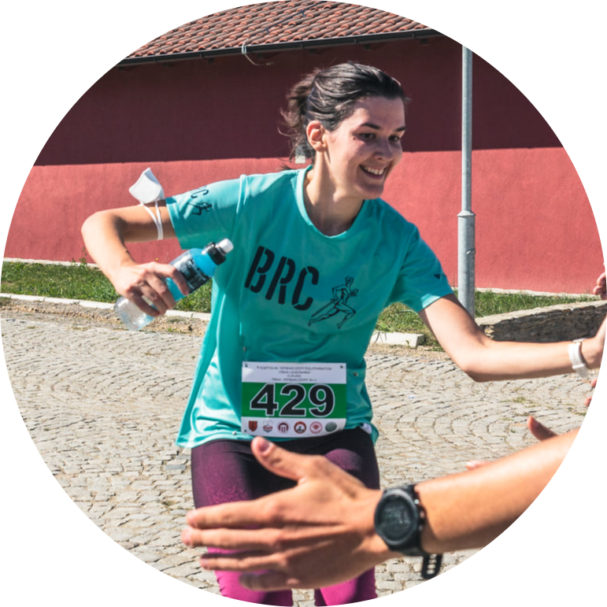

|  |
Kristina Andrejević
Profesor biologije u XIII beogradskoj gimnaziji
Od 2019. godine predajem biologiju u XIII beogradskoj gimnaziji koju sam i završila.
Korona nas je sve naterala da češće u svom radu koristimo i IKT, pa u svom radu, pored
klasične nastave u učionici, koristim i video lekcije koje snimam i kačim na svoj
jutjub kanal Biologija XIII. Ovako mogu doći i do više djaka, ali i
kolega, te djacima svojim materijalima pomoći da bolje razumeju gradivo, a
kolegama te iste materijale ostavila dostupne da mogu da ih koriste u radu sa svojim djacima.
Verujem da se ovim i drugim inovacijama možemo približiti novim i sve bolje tehnološki
obrazovanim generacijama, ali i da sami možemo naučiti više i naučeno primeniti u
savremenom načinu učenja.
|